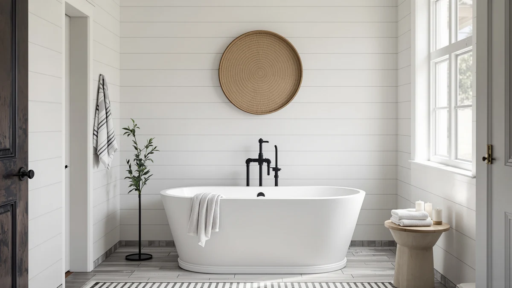

Quick Answer
This SJ Star&Jane 39" Solid review finds a solid surface freestanding tub that fits a compact 39 inch footprint for $1,299.99, the same price as the MEDUNJESS 63'' alternative but built from a sturdier, more stain-resistant material. If floor space is tight, it's the pick in this comparison; if you want more length for less money, the Homhougo 67" below costs $500 less.
Our pick: SJ Star&Jane 39" Solid Surface — $1,299.99 Check Price on Amazon
Bottom line: our top pick is the SJ Star&Jane 39" Solid Surface Japanese Soaking Bathtub Stone at $1,299.99.
Things to Know Before You Buy
- The SJ Star&Jane 39" Solid Surface measures 39 inches end to end, the shortest footprint among the four freestanding tubs covered in this review.
- At $1,299.99, it costs exactly the same as the MEDUNJESS 63'' Free Standing Tub below, while the MEDUNJESS 65" Stone Resin model runs $200 higher.
- It's built from solid surface material in a matte white finish, a different construction than the acrylic Homhougo or the stone resin MEDUNJESS alternative.
- The Amazon listing includes five product photos showing the tub from multiple angles, useful for checking the basin shape and drain placement before you order.
- None of the four listings in this SJ Star&Jane 39" Solid review publish a star rating or review count, so this comparison relies on published specs, pricing, and listing detail rather than customer scores.
This SJ Star&Jane 39" Solid review breaks down whether a compact solid surface freestanding tub justifies its $1,299.99 price against three longer alternatives. At 39 inches, it's built for a bathroom that can't fit a 60-plus inch soaker, without giving up the look of a stand-alone tub. We compared its solid surface construction, matte white finish, and price against the MEDUNJESS 63'' Free Standing Tub, the MEDUNJESS 65" Stone Resin model, and the Homhougo 67" Acrylic Freestanding Bathtub to see where it earns its spot.
Solid surface construction sets this tub apart from the acrylic and stone resin options in this review. It's a material more commonly seen in countertops and vanity tops, chosen for a smooth, nonporous finish that resists staining better than standard acrylic. At $1,299.99, the SJ Star&Jane 39" Solid Surface costs the same as the MEDUNJESS 63'' model, roughly $200 less than the MEDUNJESS 65" Stone Resin, and $500 more than the Homhougo 67" Acrylic. None of the four listings publish a star rating or review count, so price, material, and size are what this comparison leans on.
Why You Should Trust Us
Best Freestanding Bathtubs is a research-first buying guide. Ilane Tall, our home and bath editor, builds every comparison by pulling verified pricing, materials, and listing detail for each product before it earns a recommendation. We do not run a fake testing lab, and we do not claim to have installed or lived with the SJ Star&Jane 39" Solid Surface or any of the three alternatives covered in this review. Instead, this SJ Star&Jane 39" Solid review relies on manufacturer specifications and current Amazon pricing, so every claim here can be checked against the source. When a listing leaves out a detail, such as a weight capacity, drain kit, or installed overflow, we say so directly rather than filling the gap with a guess, and we flag it the same way across every product in this comparison.
Our Research Experience
We did not install or bathe in the SJ Star&Jane 39" Solid Surface or the three tubs we compared it against. Our process means going through each Amazon listing line by line: length, material, price, seller, and the number of product images available. For this SJ Star&Jane 39" Solid review, that meant checking solid surface construction against the acrylic Homhougo and the stone resin MEDUNJESS 65" model, since material affects weight, heat retention, and long-term care in ways a product photo alone won't show. We also track how each tub's price compares to the other three, since a $500 spread across four otherwise similar freestanding tubs is worth factoring into a purchase this size. Where a listing is thin on detail, such as a missing weight capacity or drain kit, we note that gap rather than guess at it. That research process, not physical testing, is what shapes the picks, pros, and cons below, and it's the same process behind every review on this site.
Overview & Specs

SJ Star&Jane 39" Solid Surface
What we like
- Solid surface construction gives it a different feel than the acrylic and stone resin alternatives in this review.
- At 39 inches, it fits a footprint that a 63 inch or longer tub can't, useful for a small or secondary bathroom.
- Priced at $1,299.99, it matches the MEDUNJESS 63'' Free Standing Tub despite needing less floor space.
- The Amazon listing includes five product photos, giving you a closer look at the basin and finish before ordering.
Flaws but not dealbreakers
- At $1,299.99, it costs $500 more than the Homhougo 67" Acrylic Freestanding Bathtub, which offers 28 more inches of length.
- The listing doesn't publish a star rating or review count, so you can't lean on verified buyer sentiment before ordering.
- Its 39 inch length rules it out for anyone who wants to stretch out fully while soaking.
| Material | — |
| Size | 39" Matte White |
The SJ Star&Jane 39" Solid Surface is the shortest tub in this comparison, and that's the point. At 39 inches, it drops into a bathroom footprint that the 63 inch, 65 inch, and 67 inch alternatives below simply can't match, which makes it a candidate for a small or secondary bathroom rather than a primary suite remodel. It's built from solid surface material rather than the acrylic or stone resin used elsewhere in this review, finished in matte white. Solid surface is the same family of material commonly used for countertops and vanity tops, chosen for a smooth, nonporous surface that resists staining better than standard acrylic. The specs table lists size as 39 inches and leaves the exact material grade to the product name, which is consistent with what the listing itself discloses and nothing more.
At $1,299.99, it costs exactly the same as the MEDUNJESS 63'' Free Standing Tub despite taking up less floor space, which makes the choice between the two mostly about footprint rather than budget. It runs $200 cheaper than the MEDUNJESS 65" Stone Resin model and $500 more than the Homhougo 67" Acrylic Freestanding Bathtub, so where it lands in this SJ Star&Jane 39" Solid review depends on how much you value material and compact size over sheer length. The Amazon listing includes five product photos, letting you check the basin shape and finish from multiple angles before you commit to a tub this size. Brand and sku are both clearly listed, so you can confirm you're ordering the exact 39 inch solid surface tub reviewed here rather than a similarly named variant.
What We Liked
The clearest strength of the SJ Star&Jane 39" Solid Surface is its combination of compact size and sturdier material. Solid surface construction sets it apart from the acrylic Homhougo and the stone resin MEDUNJESS 65" model covered later in this review, and solid surface is a nonporous material, which typically resists staining and scratching better than standard acrylic over years of use. At 39 inches, it also fits bathrooms where a 63 inch or longer freestanding tub would crowd the room, without forcing you into a built-in alcove unit instead. Priced at $1,299.99, it matches the MEDUNJESS 63'' alternative dollar for dollar, so you're not paying extra for the smaller footprint. Five listing photos round out the picture, giving you a reasonable look at the basin and matte white finish before you order.
What Could Be Better
Price relative to length is the main tradeoff in this SJ Star&Jane 39" Solid review. At $1,299.99, it costs $500 more than the Homhougo 67" Acrylic Freestanding Bathtub, which offers 28 additional inches for less money. The listing also doesn't publish a star rating or review count, so you can't check verified buyer sentiment the way you might with a more established product page. And at 39 inches, it's simply too short for anyone who wants to fully stretch out while soaking. If length matters more than material or footprint, the longer alternatives below are worth a look before you commit to this one.
Who Is It For?
The SJ Star&Jane 39" Solid Surface suits a buyer who has a small or secondary bathroom and wants solid surface durability without the bulk of a 63 inch or longer tub. It fits a remodel where floor space is the limiting factor and a stand-alone soaking tub is still the goal. If your bathroom can accommodate a longer tub and price per inch matters more to you, the Homhougo 67" Acrylic Freestanding Bathtub below costs less and adds significant length. Anyone who wants a verified star rating before ordering should treat that as a question to raise with the seller directly, since none of the four listings in this SJ Star&Jane 39" Solid review provide one.
Alternatives to Consider
Three other freestanding tubs are worth comparing before you commit to the SJ Star&Jane 39" Solid Surface. Each one trades length, material, or price against the pick above, and none of the three publish a star rating or review count either, so the comparison below sticks to size, material, and price, the details every shopper can verify before checking out.

Editor’s Pick
MEDUNJESS 63'' Free Standing Tub
At $1,299.99, this MEDUNJESS matches the SJ Star&Jane 39" Solid Surface dollar for dollar, but stretches to 63 inches, 24 inches longer. If floor space allows it, this is the pick for more room to stretch out at the same price.
$1,299.99
Check Price on Amazon
Best Value
MEDUNJESS 65" Stone Resin Free
Priced at $1,499.00, this MEDUNJESS runs $200 above the SJ Star&Jane 39" Solid Surface and trades solid surface for stone resin construction at 65 inches. It's the longest and most expensive tub in this comparison, worth a look if stone resin's heft and heat retention matter more to you than price.
$1,499.00
Check Price on Amazon
Premium Choice
Homhougo 67" Acrylic Freestanding Bathtub
At $799.99, the Homhougo undercuts the SJ Star&Jane 39" Solid Surface by $500 while adding 28 inches of length, built from acrylic rather than solid surface. It's the budget pick in this review if price and length matter more than material.
$799.99
Check Price on AmazonFrequently Asked Questions
Is the SJ Star&Jane 39" Solid Surface tub worth the price?
At $1,299.99, the SJ Star&Jane 39" Solid Surface costs the same as the MEDUNJESS 63'' Free Standing Tub and less than the MEDUNJESS 65" Stone Resin model, so the price buys solid surface construction in a compact 39 inch footprint rather than acrylic or stone resin at a longer length.
How does the SJ Star&Jane 39" Solid Surface compare to the Homhougo 67" acrylic tub?
The Homhougo measures 67 inches and costs $799.99, which is $500 less than the SJ Star&Jane and built from acrylic rather than solid surface material. Solid surface construction generally feels sturdier and resists staining better than acrylic, while the Homhougo suits buyers who want more length for less money.
Does the SJ Star&Jane 39" Solid Surface fit a small bathroom?
At 39 inches, it's the shortest tub in this comparison, roughly 24 to 28 inches shorter than the other three alternatives reviewed here, which makes it a practical choice for a small or secondary bathroom.
Final Verdict
The verdict of this SJ Star&Jane 39" Solid Surface review comes down to footprint. At $1,299.99, it earns its price with solid surface construction and a compact 39 inch length that fits bathrooms where a 63 inch or longer tub simply won't go. The MEDUNJESS 63'' Free Standing Tub matches that price with 24 more inches of room, the MEDUNJESS 65" Stone Resin costs $200 more for an even longer stone resin shell, and the Homhougo 67" Acrylic Freestanding Bathtub undercuts all three at $799.99 if length and price matter more than material. If your bathroom is small and solid surface durability is the priority, SJ Star&Jane is the tub to start with.